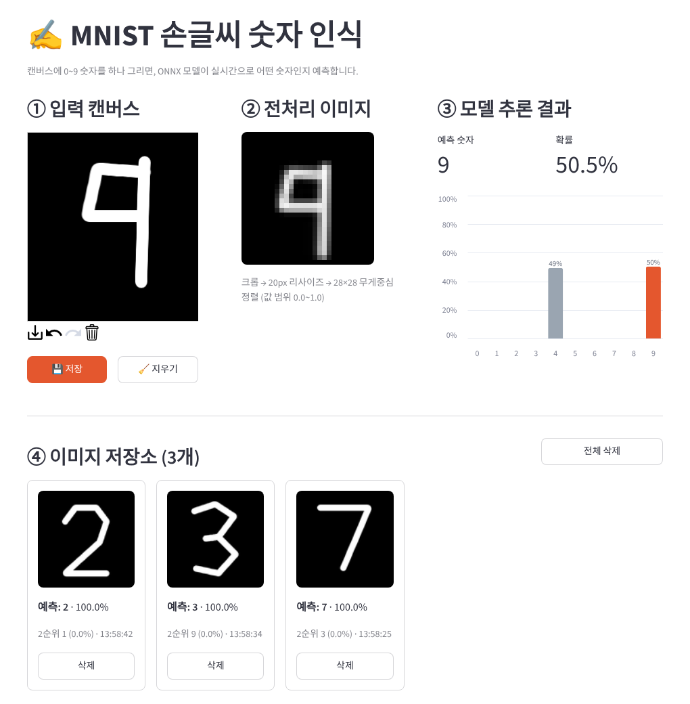
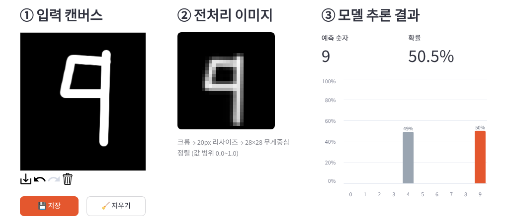

| 팀 / 이름 | {{TEAM}} / {{NAME}} |
| 작성일 | {{DATE}} |
| Docker Hub | {{HUB_URL}} |
| 실행 방법 | docker run -p 8501:8501 {{IMAGE}} |
사용자가 브라우저 캔버스에 마우스로 그린 숫자(0~9)를 ONNX Model Zoo의 사전 학습 모델
mnist-12.onnx로 실시간 인식하는 웹 서비스를 구현하였다. 그린 이미지를 모델 입력 사양에 맞게
전처리하는 과정과 각 레이블의 예측 확률을 화면에 함께 보여 주어, 모델이 무엇을 보고 어떻게 판단하는지
확인할 수 있도록 하였다. 완성된 서비스는 Docker 이미지로 패키징하여 Docker Hub에 배포하였으며,
빌드 · 테스트 · 배포 · 보고서 작성 과정을 deploy.py 하나로 자동화하였다.
| 가이드라인 항목 | 구현 내용 |
|---|---|
| 입력 캔버스 | streamlit-drawable-canvas의 st_canvas (280×280, 검은 배경 + 흰 펜, 펜 굵기 조절) |
| 전처리 이미지 표시 | 모델 입력인 28×28 이미지를 196px로 확대(NEAREST)해 픽셀 단위로 표시 |
| 모델 추론 결과 | Altair 막대 차트로 0~9 확률 시각화, 예측 레이블만 강조색 · 예측 숫자/확률 지표 |
| 이미지 저장소 | 세션별 갤러리에 그림 썸네일 · 예측 레이블 · 확률(1·2순위) · 저장 시각 표시, 개별/전체 삭제 |
| 모델 관리 · 캐싱 | 디스크 캐시(최초 1회 다운로드) + st.cache_resource로 추론 세션을 프로세스 전체에서 공유 |
| 전처리 · 추론 함수 | model_utils.preprocess(), model_utils.predict()로 UI와 분리된 모듈 구현 |
| 도커 컨테이너화 | python:3.12-slim 기반 Dockerfile, 빌드 시 모델 포함, 비 root 실행, 헬스체크 |
| Docker Hub 배포 | {{IMAGE}} 로 push 완료 (6장의 자동 기록 참고) |
| 구분 | 사용 기술 (고정 버전) |
|---|---|
| 웹 UI | Streamlit 1.66.1, streamlit-drawable-canvas 0.9.3, Altair 6.3.0 |
| 추론 런타임 | ONNX Runtime 1.29.0 (CPUExecutionProvider) |
| 이미지 처리 | NumPy 2.5.3, Pillow 12.3.0, SciPy 1.18.1 (무게중심 계산) |
| 배포 | Docker (python:3.12-slim), Docker Hub, 배포 자동화 스크립트 deploy.py |
ONNX Model Zoo의 validated/vision/classification/mnist/model/mnist-12.onnx(opset 12, 약 26KB)를
사용하였다. Conv–ReLU–MaxPool 블록 2개와 완전연결층으로 구성된 소형 CNN이다. 모델 그래프를 직접 열어
확인한 입출력과 모델 설명서의 전처리 조건은 다음과 같다.
| 항목 | 값 |
|---|---|
| 입력 | Input3 · shape (1, 1, 28, 28) · float32 · 검은 배경/흰 글씨 · 값 범위 0.0~1.0 |
| 출력 | Plus214_Output_0 · shape (1, 10) · softmax 이전의 점수(logit) |
| 후처리 | softmax를 적용하여 10개 클래스 확률(합 = 1)로 변환 |
| ① 캔버스RGBA 280×280 마우스 드로잉 | → | 전처리흑백 · 크롭 20px 리사이즈 | → | ② 28×28무게중심 정렬 0.0~1.0 정규화 | → | ONNX Runtime캐시된 세션 logits (1,10) | → | ③ softmax확률 막대 차트 예측 레이블 | → | ④ 저장소세션 상태 갤러리 |
Streamlit은 사용자가 위젯과 상호작용할 때마다 스크립트 전체를 다시 실행(rerun)한다. 캔버스에 선을 그을 때마다
rerun이 발생하므로, 모델 로딩처럼 무거운 작업은 캐시하고 저장소처럼 유지해야 하는 데이터는
st.session_state에 두는 것이 설계의 핵심이다.
mnist-app/
├── app.py # Streamlit UI: 4개 화면 영역, 세션 상태, 모델 캐싱
├── model_utils.py # 모델 다운로드/디스크 캐시, 전처리, 추론 (UI와 독립)
├── requirements.txt # 검증된 버전으로 고정한 의존성
├── Dockerfile # 컨테이너 이미지 정의
├── .dockerignore # 빌드 컨텍스트 제외 목록
├── .streamlit/config.toml # 서버(headless) · 테마 설정
├── deploy.py # 빌드 → 테스트 → push → 보고서 PDF · 코드 zip 자동 생성
├── report/template.html # 이 보고서의 템플릿 (+ 실행 화면 이미지)
└── README.md # 실행 · 빌드 · 배포 방법
model_utils.py모델 관리 · 전처리 · 추론을 담당하는 모듈로, Streamlit에 의존하지 않아 단독 테스트와 재사용이 가능하다.
download_model()파일이 이미 있으면 네트워크를 사용하지 않고 그대로 반환한다. 다운로드는 임시 파일(.part)에
받은 뒤 완료되면 교체하여, 중간에 끊겨도 손상된 파일이 남지 않게 했다.
if path.exists() and path.stat().st_size > _MIN_MODEL_BYTES:
return path # 캐시 적중: 재다운로드 없음
tmp_path = path.with_suffix(".part")
urllib.request.urlretrieve(url, tmp_path)
if tmp_path.stat().st_size <= _MIN_MODEL_BYTES: # LFS 포인터 파일 방지
raise RuntimeError(...)
tmp_path.replace(path).onnx 파일은 Git LFS로 관리되어
github.com/.../raw/... 주소로 받으면 수백 바이트짜리 포인터 텍스트만 내려온다. 실제 모델(약 26KB)은
media.githubusercontent.com/media/onnx/models/main/... 주소로 받아야 하며, 크기 검사로 이 실수를 감지한다.preprocess()MNIST 데이터셋은 숫자를 20×20 영역에 맞춘 뒤 28×28 이미지의 무게중심에 배치해 만들어졌다. 캔버스 그림도 같은 방식으로 변환해야 학습 분포와 맞아 정확도가 높다.
scipy.ndimage.center_of_mass로 중심을 (14, 14)로 이동cropped = gray[ys.min():ys.max()+1, xs.min():xs.max()+1]
scale = 20.0 / max(h, w)
small = Image.fromarray(cropped.astype(np.uint8)).resize((new_w, new_h), Image.LANCZOS)
canvas[top:top+new_h, left:left+new_w] = np.asarray(small, dtype=np.float32)
cy, cx = ndimage.center_of_mass(canvas)
canvas = ndimage.shift(canvas, (14 - cy, 14 - cx), order=1)
return (np.clip(canvas, 0, 255) / 255.0).astype(np.float32)아무것도 그리지 않은 상태(밝기 10 초과 픽셀 없음)에서는 None을 반환하여, UI가 빈 상태 안내를 표시하도록 한다.
create_session(), predict()def predict(session, image28):
x = image28.reshape(1, 1, 28, 28).astype(np.float32) # (N, C, H, W)
input_name = session.get_inputs()[0].name # "Input3"
output_name = session.get_outputs()[0].name # "Plus214_Output_0"
logits = session.run([output_name], {input_name: x})[0][0]
return softmax(logits) # exp(z - max) / sum입출력 이름을 하드코딩하지 않고 세션에서 조회하므로 같은 사양의 다른 MNIST 모델로도 교체할 수 있다. softmax는 최댓값을 빼서 계산해 지수 연산의 overflow를 막는다.
app.pyst.cache_resource@st.cache_resource(show_spinner="MNIST ONNX 모델을 불러오는 중입니다...")
def load_model():
return mu.create_session()모델 캐싱은 두 단계로 동작한다. ① 모델 파일은 디스크에 캐시되어 컨테이너 재시작 후에도 다시 받지 않고,
② 추론 세션 객체는 st.cache_resource로 서버 프로세스에서 한 번만 생성되어 모든 사용자 세션과 rerun이
공유한다. 따라서 선 하나를 그을 때마다 발생하는 rerun에서도 모델 로딩 비용이 들지 않는다.
(측정: 전처리 약 2ms, 추론 약 0.07ms / CPU)
| 키 | 역할 |
|---|---|
gallery | 이미지 저장소 목록. 사용자(브라우저 세션)마다 독립적으로 유지되며 최신 항목이 앞에 온다. |
canvas_key | 캔버스 위젯 key에 붙는 번호. ‘지우기’ 시 값을 1 올려 새 캔버스를 만들어 그림을 초기화한다. |
st_canvas(stroke_color="#FFFFFF", background_color="#000000", drawing_mode="freedraw").
사이드바에서 펜 굵기(8~32)와 실시간 추론 여부(update_streamlit)를 조절한다.st.metric으로 예측 숫자 · 확률, Altair 막대 차트로 0~9 확률을 표시한다.
예측 레이블만 강조색으로 칠하고 1% 이상인 막대에만 수치를 표기했다.st.session_state.gallery.insert(0, {
"thumb": to_thumbnail(raw, THUMB_SIZE), "processed": processed.copy(),
"pred": pred, "prob": float(probs[pred]), "probs": probs.tolist(),
"time": datetime.now().strftime("%H:%M:%S"),
})streamlit-drawable-canvas 0.10.0 이상은 최신 Streamlit(1.66)과 함께 쓰면 import 단계에서
“must be declared in pyproject.toml with asset_dir” 오류가 발생했다. 버전별로 확인한 결과 0.9.3은 정상 동작하여
requirements.txt에서 0.9.3으로 고정하고, 나머지 패키지도 검증한 버전으로 모두 고정해 재현 가능한 빌드를 확보하였다.| 항목 | 결과 |
|---|---|
| 모델 입출력 사양 확인 (onnx 그래프) | Input3 (1,1,28,28) → Plus214_Output_0 (1,10) 확인 |
| 폰트로 렌더링한 숫자 30개 (3종 × 0~9) | 29/30 정답 (오답 1건: Liberation Sans 서체의 6 → 5) |
| 캔버스 획을 흉내 낸 손글씨 10개 | 10/10 정답 |
| 헤드리스 Chrome으로 실제 UI 조작 | 그리기 → 전처리 · 차트 갱신 → 저장 → 지우기 → 저장소 3건 누적 정상 동작 |
| 빈 캔버스 | 추론하지 않고 안내 문구와 빈 차트 표시 |
| 배포 이미지 컨테이너 실행 (deploy.py 자동) | {{HEALTH}} |

FROM python:3.12-slim
ENV PYTHONUNBUFFERED=1 PIP_NO_CACHE_DIR=1 MNIST_MODEL_DIR=/app/models
WORKDIR /app
COPY requirements.txt .
RUN pip install --upgrade pip && pip install -r requirements.txt # 의존성 레이어 캐시
COPY model_utils.py app.py ./
COPY .streamlit/ .streamlit/
RUN python -c "import model_utils as mu; mu.download_model()" # 빌드 시 모델 포함
RUN useradd --create-home appuser && chown -R appuser /app
USER appuser # 비 root 실행
EXPOSE 8501
HEALTHCHECK CMD python -c "import urllib.request; urllib.request.urlopen('http://localhost:8501/_stcore/health')"
CMD ["streamlit", "run", "app.py", "--server.port=8501", "--server.address=0.0.0.0"]requirements.txt를 먼저 복사 · 설치하여, 소스만 바뀌면 의존성 설치 단계를 재사용한다.deploy.py아래 명령 하나로 빌드부터 Docker Hub 업로드, 이 보고서와 코드 zip 생성까지 순서대로 실행된다. 테스트나 업로드가 실패하면 그 자리에서 멈추므로, 배포되지 않은 이미지로 보고서가 만들어지지 않는다.
python deploy.py --id {{DOCKERHUB_ID}} --team "{{TEAM}}" --name "{{NAME}}"| # | 단계 | 내용 |
|---|---|---|
| 1 | 이미지 빌드 | docker build -t {{IMAGE}} . |
| 2 | 컨테이너 실행 테스트 | 임시 포트로 컨테이너를 띄워 /_stcore/health 응답을 확인한 뒤 종료 |
| 3 | 로그인 · 업로드 | docker login → docker push {{IMAGE}} |
| 4 | 배포 확인 | Docker Hub API에서 태그가 실제로 올라갔는지 조회 |
| 5 | 보고서 · 코드 생성 | 배포 결과를 채운 PDF와 코드 zip을 미션17/{팀명}_{이름}/에 저장 |
| 항목 | 값 |
|---|---|
| Docker Hub URL | {{HUB_URL}} |
| 이미지 | {{IMAGE}} |
| Digest | {{DIGEST}} |
| 플랫폼 · 크기 | {{PLATFORM}} · {{SIZE}} |
| 빌드 · 업로드 시각 | {{PUSHED_AT}} |
| Docker 엔진 | {{DOCKER_VERSION}} |
| 컨테이너 테스트 | {{HEALTH}} |
| Docker Hub 확인 | {{HUB_CHECK}} |
docker run -p 8501:8501 {{IMAGE}} → 브라우저에서 http://localhost:8501